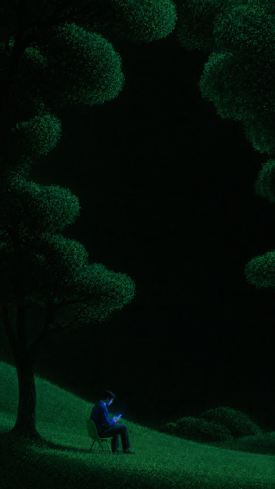
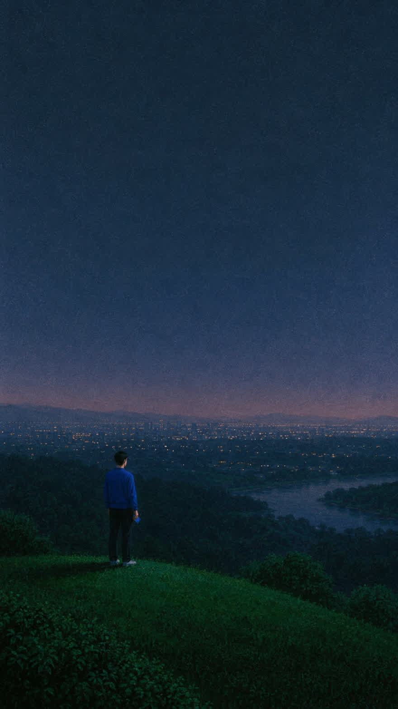

I used to open Instagram before I got out of bed. Now it stays locked until I have been outside. Three weeks in, the reflex is mostly gone.
How Earnit works
Move. Earn. Scroll.
Your daily movement becomes screen time. When your balance reaches zero, your selected apps are blocked again.

Wednesday
Earnit
Day 3 streak
Available time
10
min
to spend on your apps
Earn more time
1,000 steps until your next 5 minutes
2,000 steps today · +10 min earned today
Not another app blocker
Scrolling isn't forbidden.
It's earned.
Earnit doesn't ask you to disappear from the internet. It simply puts something real before the scroll.
2,000
steps
+10 min
earned
10 min
to spend
0 min
apps lock again
What changes
The scroll stops being automatic.
The exchange rate is the whole trick. Five minutes sounds cheap until you work out that it costs you a thousand steps.
My evening scrolling went from roughly two hours to under forty minutes. I never set that as a goal. Scrolling just quietly became inconvenient.
It is the only thing I have tried that does not feel like a punishment. Nothing is forbidden. I just have to move first.
Before you download
The questions people actually ask.
How does Earnit know I have walked?
It reads your step count from Apple Health, which your iPhone already records on the motion coprocessor. Earnit only ever reads that number. It never writes to your health record.
Which apps get blocked?
The ones you pick, through Apple's Screen Time permission. Most people choose two or three. Messages, maps and calls are never touched.
What is the exchange rate?
1,000 steps earns 5 minutes by default. You can make it harder if that feels too easy, and the app will suggest a rate based on how much you already walk.
Will it drain my battery?
No. The step data comes from a sensor your phone already runs all day. Earnit reads it a few times an hour rather than tracking you continuously.
Can I cheat by shaking my phone?
Not usefully. The motion coprocessor distinguishes walking from shaking, so the count stays flat. You would also have to shake it about a thousand times for 5 minutes.
What happens when I reach zero?
Your chosen apps lock again and stay locked until you walk. There is no timer to wait out and no button that buys your way past it.
Does my health data leave the phone?
Never. Step counts and app usage stay on your device. There is no account to create, so there is nothing on a server to leak.
What does it cost?
The daily loop is free and stays free. A paid tier at $19.00 a year adds custom rates, multiple app groups and a full history of what you earned.

More life. Less autopilot.
What would you do
with an extra hour?
Spend less time scrolling by accident and more time choosing what deserves your attention.
Free on iPhone. No account, no card, delete it whenever you like.